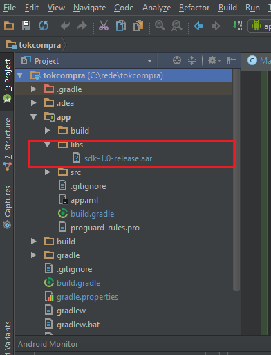
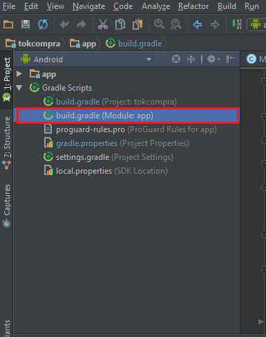

Neste codelab você irá integrar o pacote da rede para realizar um pagamento simples a partir de um aplicativo Android existente. Se você quiser aprender a fazer um novo aplicativo Android, acessa a home e veja como criar um novo projeto desde o início.
Baixar a lib de integração (em anexo, posteriormente será disponibilizada via repositório maven) e copiar para a pasta Libs do android. Depois da lib copiada, sincronizar o projeto novamente.

O módulo de dependências fica na seção Gradle Scripts dentro do módulo build.gradle. Geralmente
no Module:app ou outro nome definido para a seção do aplicativo

dependencies {
..
compile(name: 'sdk-1.0-release', ext: 'aar')
..
}Em uma aplicação exemplo, temos um button que quando clicado dispara a execução do método abaixo que faz a chamada para a tela de reimpressão de comprovante.
public void onReprint() {
try {
Intent reprint = new Intent(Intents.REPRINT_PAYMENT);
startActivityForResult(reprint, 2);
} catch(ActivityNotFoundException ex) {
Log.e("TokCompra", "Poynt Payment Activity not found - did you install
PoyntServices?");
}
}
No passo anterior, iniciamos uma activity com método startActivityForResult(). Toda vez que esse método
é inicializado, a resposta é devolvida no método onActivityResult. Para receber a resposta, basta
sobrescrever o método na activity.
public void onActivityResult(int requestCode, int resultCode, Intent data) {
if(resultCode==Activity.RESULT_OK && requestCode==2) {
Toast.makeText(this, "Reimpressão OK", Toast.LENGTH_LONG).show();
} else {
Toast.makeText(this, "Reimpressão Cancelada ", Toast.LENGTH_LONG).show();
}
}